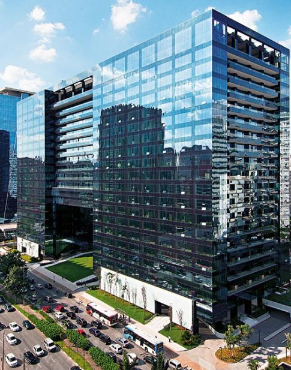
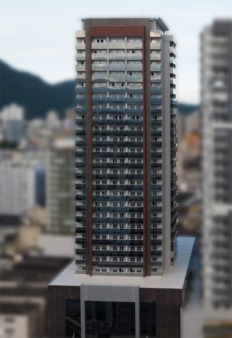
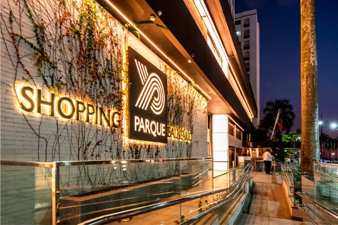

A Zynk oferece soluções em tecnologia e suporte técnico, conectando pessoas e empresas por meio de serviços eficientes, modernos e confiáveis.
Conheça a ZynkA Zynk é uma empresa de tecnologia especializada em suporte técnico e soluções de TI. Fundada em 13 de novembro de 2021 por amigos, surgiu da vontade de transformar o conhecimento tecnológico em ajuda para outras pessoas e empresas.
O que começou com o auxílio a colegas e conhecidos se transformou em uma empresa que atende tanto pessoas físicas quanto empresas, buscando sempre oferecer qualidade, agilidade e confiança.
Soluções tecnológicas para facilitar o seu dia a dia.
Atendimento especializado para identificar e solucionar problemas em equipamentos e sistemas.
Manutenção preventiva e corretiva de computadores e periféricos.
Configuração, organização e suporte para redes e conexões de internet.
Instalação, configuração e orientação sobre programas e sistemas.
Presença e conexão em diferentes localidades.

São Paulo - SP

Praia Grande - SP

Santos - SP
Conte com a Zynk para encontrar soluções inteligentes.
Saiba mais sobre nós